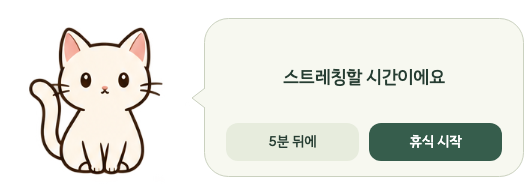
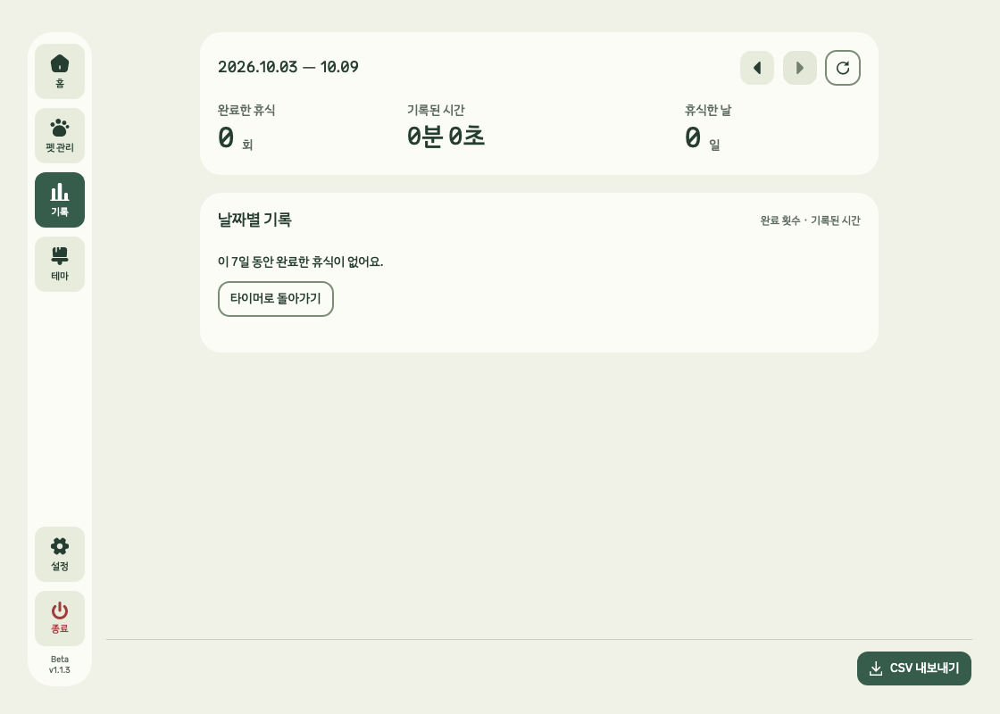

내가 고른 펫이 쉬어 갈 시간을 알려줘요.
이미지·GIF·MP4
3D(GLB)
원하는 펫을
내 화면 곁에.


A moment, just for you
내 하루에 어울리는
작은 쉼.

실제 앱 화면 · Beta v1.1.3 개발본
Unfold for your desktop
다음 휴식은,
좋아하는 펫과.
Windows 10 이상 · macOS 13 이상
테스트 기준가 · 세금 별도
4,900원
정식 판매 전이며 실제 청구되지 않습니다.
Beta는 이용 코드를 받은 테스터가 사용할 수 있습니다.